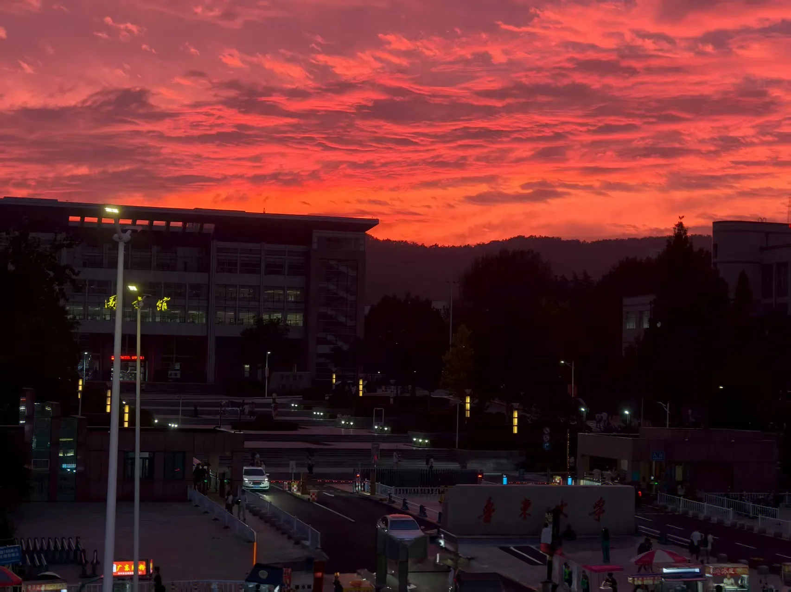

美丽校园—秋韵
——软工2502 张子默
鲁大秋韵：在时光里邂逅诗意与浪漫
鲁东大学的秋，是一场视觉与心灵的双重盛宴。
一场雨过，天际忽然架起一道彩虹，如梦幻的桥横跨在校园上空。远处的山峦在暮色里朦胧如黛，近处的操场绿草依旧，却已染上秋的澄澈。彩虹的七彩与天空的粉紫交融，将校园的秋意晕染得格外温柔。
当暮色深沉，图书馆的灯火次第亮起，天边的晚霞如燃烧的锦缎，将整个校园笼罩在一片绯红之中。鲁东大学的秋，有科研楼前的静谧，有彩虹下的绚烂，更有晚霞里的热烈，每一处风景都是时光写给学子的诗，在岁月里熠熠生辉。
